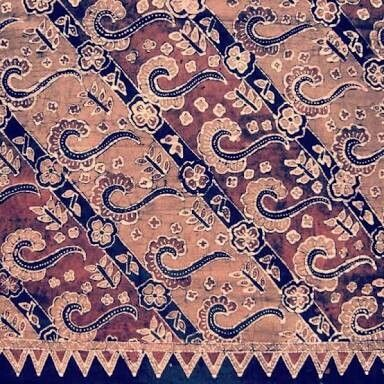
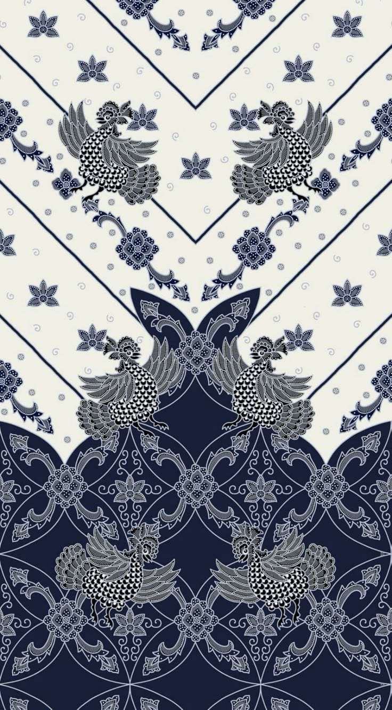
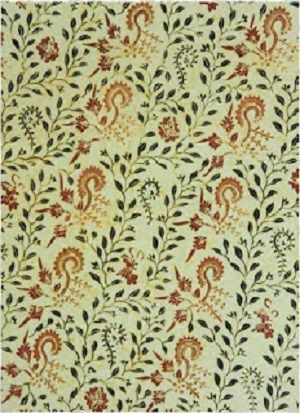

Mengenal Batik Banyuwangi
Batik Banyuwangi merupakan warisan tradisi kekayaan budaya asli Kabupaten Banyuwangi, Jawa Timur, yang terinspirasi dari alam dan kehidupan masyarakat Suku Osing. Motif-motifnya sarat akan makna filosofis dan sejarah panjang masyarakat Blambangan.
Seiring berjalannya waktu, batik ini mengalami inovasi desain sehingga tampil lebih segar, elegan, dan sesuai perkembangan zaman tanpa menghilangkan akar budaya lokal. Lahirlah apa yang kita kenal sebagai Batik Banyuwangi Modern.
Ikon Utama & Makna
Meskipun telah dimodernisasi, jantung dari Batik Banyuwangi Modern tetap berakar pada motif ikonik seperti Gajah Oling.
Makna Filosofis "Eling"
Berasal dari kata eling (mengingat), yang mengajak manusia selalu mengingat Tuhan, menjaga nilai kehidupan, dan menghormati sesama. Nilai ini tetap dipertahankan dalam setiap helai kain modern.
Evolusi Desain
Kini motif tradisional tampil dengan variasi warna dan desain baru yang lebih kekinian, menarik minat generasi muda tanpa menghilangkan esensi aslinya.
Ciri Khas & Keunggulan
Batik Banyuwangi Modern memiliki karakteristik yang membuatnya sangat diminati di pasar fashion saat ini:
- Desain: Lebih minimalis, elegan, dan menggunakan pilihan warna yang cerah serta beragam.
- Aplikasi Produk: Sangat fleksibel, mulai dari pakaian formal (kemeja, blazer, dress) hingga aksesoris fashion (hijab, tas).
- Fleksibilitas: Cocok digunakan oleh semua kalangan untuk berbagai acara (formal, kantor, sekolah, hingga santai).
Dampak dan Pelestarian
1. Inovasi Budaya
Menjadi bukti bahwa budaya tradisional dapat terus hidup berdampingan dengan tren modern serta menarik minat generasi muda untuk melestarikannya.
2. Dukungan Ekonomi Lokal
Memakai batik modern ini menjadi bentuk apresiasi dan dukungan ekonomi terhadap para pengrajin daerah, membantu kesejahteraan mereka.
Kesimpulan
Batik Banyuwangi Modern sukses memadukan tradisi dan inovasi, menjadikannya sebuah identitas budaya yang stylish sekaligus bernilai tinggi di tingkat nasional maupun internasional.
Galeri



